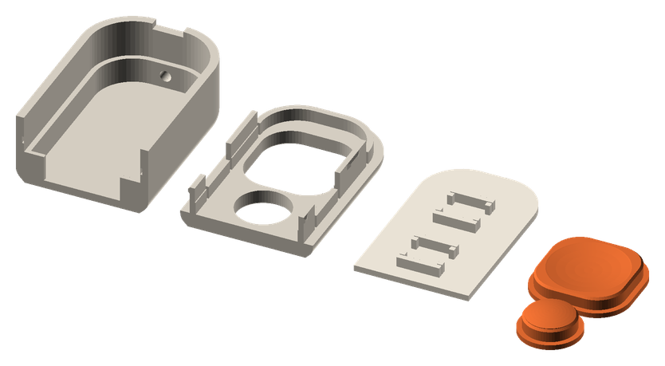
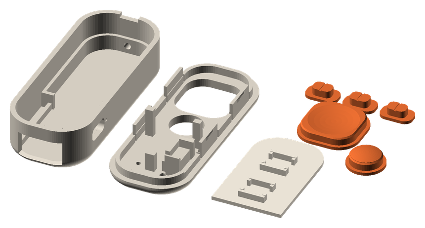
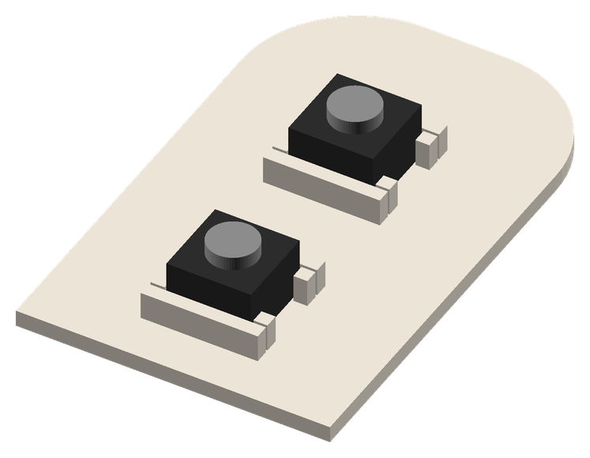
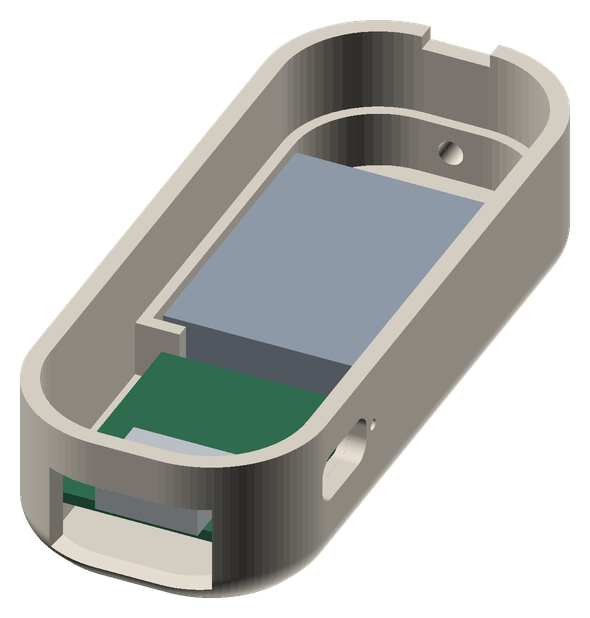
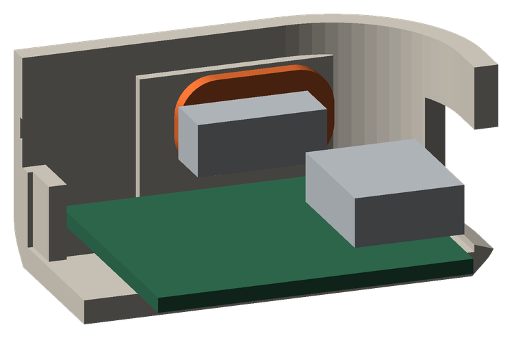
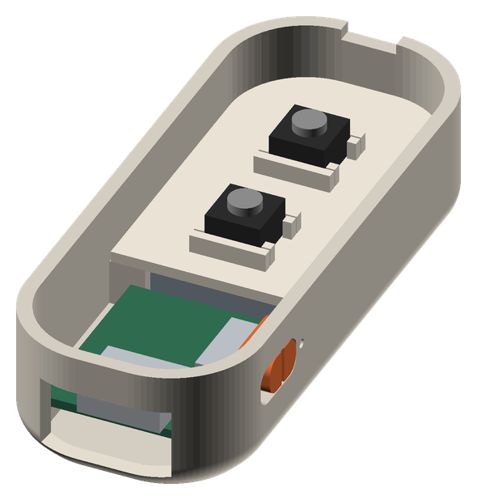
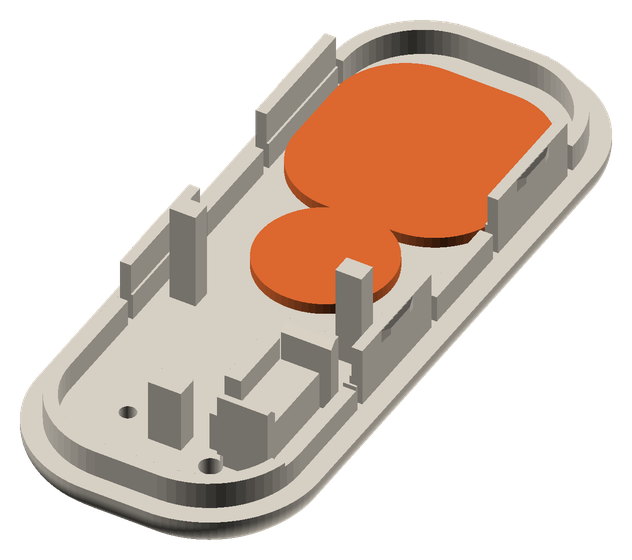
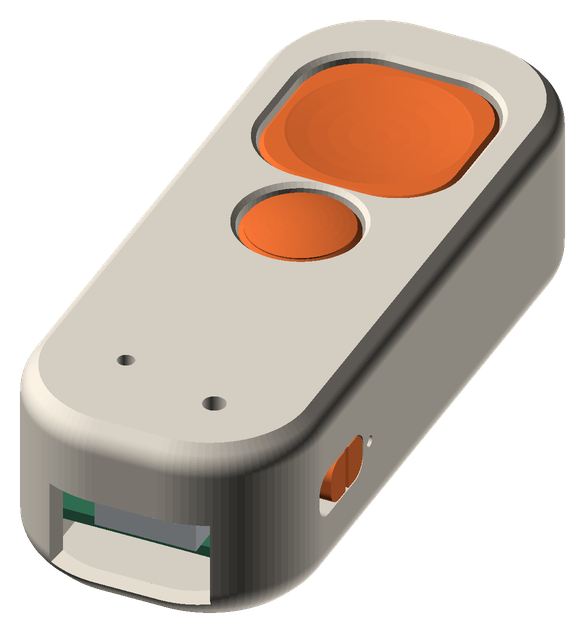
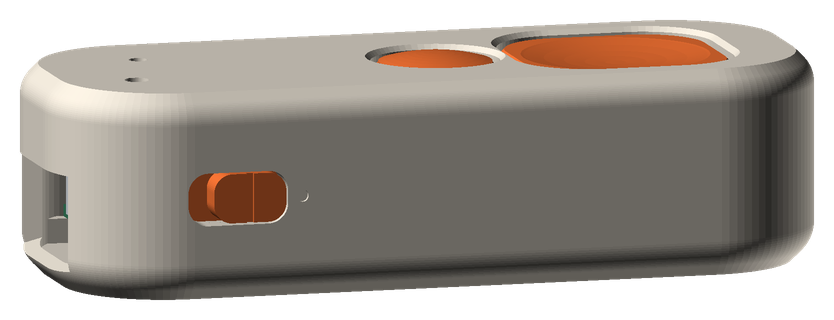

LiPo safety. Never let the two battery leads touch. Cut and strip them one at a time and tape each end before touching the other. Keep the iron away from the pouch.
Caliper your parts, change case/params.scad where they differ, run ./render.sh kobo.
| Param | Measure | Nominal |
|---|---|---|
| sw_h | Tact switch, base to top of the silicone dome, unpressed. Get this to 0.05 mm: the switch only travels 0.25 mm. | 5.0 |
| batt | Battery width × length × thickness, including the protection-board bump and tape | 20 × 25 × 4.5 |
| psw | Slide switch body: length × depth (handle to pins) × height | 8.6 × 3.6 × 3.5 |
| psw_handle | Handle: along the slide × across × length past the body | 2.0 × 1.5 × 3.0 |
| usb_plug | Your bulkiest USB-C plug body, W × H, plus 1 mm | 12.5 × 7.0 |
| xiao | Board width × length × thickness | 17.8 × 21 × 1.0 |
Bambu P1S, PLA, 0.4 mm nozzle. STLs are in case/stl/kobo/.
| Setting | Value |
|---|---|
| Layer height | 0.10 mm |
| Walls | 3 |
| Supports | Off |
| Plate | Smooth or cool plate. The lid prints top-face down, so a textured plate would texture the top. |
| Caps | Ironing on, for a glossy top |
Print coupon_base, coupon_lid, coupon_tray, both caps and one knob.

If anything is off, see Fixes, change the param, re-export, and reprint just that part.

| Part | Qty |
|---|---|
| base | 1 |
| lid | 1 |
| tray | 1 |
| plunger_next | 1 |
| plunger_prev | 1 |
| knob | 3 |
firmware artifact from the repo's Actions page and unzip it. You need read_remote.uf2.XIAO-SENSE appears.read_remote.uf2 onto the drive. It ejects itself and the board reboots.| From | To | Length |
|---|---|---|
| NEXT switch, leg A | D0 | 60 mm |
| PREV switch, leg A | D1 | 60 mm |
| NEXT leg B | PREV leg B | 25 mm |
| PREV leg B | GND (pin 2 on the 5V side) | 70 mm |
| Battery red | Slide switch COM (middle pin) | battery lead |
| Slide switch ON pin | BAT+, underside | 50 mm |
| Battery black | BAT−, underside | battery lead |
Cut long, trim at assembly. The D0/D1 side of the board is the side the slide switch sits on in the case; GND is on the opposite side. The battery pads are labelled on the underside silkscreen; go by the labels, not by the diagram's positions.

The board rests on 2 mm rails along its long edges, so the underside joints and Kapton must stay under 1.5 mm tall and between the rails.
If OFF does not cut power, the ON wire is on the wrong end pin. Move it to the other end pin.
Battery and board. Switch to OFF. Lay the battery flat in the bay at the far end, leads toward the board. Set the XIAO on its rails, components up, USB-C into the end opening. It is held by the end stops and the rounded corners.

Knob and slide switch. From inside, push the knob's tile out through the side window and slide it to the USB end of the window. Set the switch handle to OFF, then press the handle into the knob's pocket with the pins facing the board. The switch hangs on the knob until the lid goes on.

Tray. Lower the tray onto the ledge around the battery. Its front edge rests on the board's end stops. Tuck the wires down along the sides, clear of the snap-finger slots in the walls.

Caps and lid. Put the lid face down on the bench and drop both caps into their windows, flange up. Turn the base over and lower it onto the lid. Check that the slide switch lines up between the two small walls on the lid, then press until all four fingers click.



| Do | Result |
|---|---|
| Slider toward the buttons | On. Toward USB is off, with the battery fully disconnected. |
| Charge | Slider must be ON; it charges through the XIAO. |
| NEXT / PREV | Page Down / Page Up |
| Hold both, 1–4 s | Button lock on or off |
| Hold both, 4 s or more, on USB | Bootloader drive, for new firmware |
| Hold PREV 5 s | Soft power off; any press wakes it |
| Paperclip in the pinhole by USB, twice | Bootloader, if the buttons can't |
| Open the case | Fingernail in the notch at the far end |
Change the param in case/params.scad, run ./render.sh kobo, reprint the one part.
| Symptom | Change |
|---|---|
| Cap binds in its window | fit 0.25 → 0.35 |
| Cap rattles or sits low | preload -0.1 → 0 |
| Button stays pressed | preload -0.1 → -0.2, and re-measure sw_h |
| Lid too tight to snap | snap_bump 0.3 → 0.2 |
| Lid loose | snap_bump 0.3 → 0.4 |
| Tact switch loose in its pocket | pocket_fit 0.15 → 0.1 |
| Knob stiff in the window | knob_fit 0.15 → 0.25 |
| Knob loose on the handle | knob_pocket_fit 0.1 → 0.05, or a drop of CA |
| USB plug won't seat | usb_plug, usb_flare |
| Pairing misbehaves | Flash settings_reset.uf2, then read_remote.uf2, then re-pair |